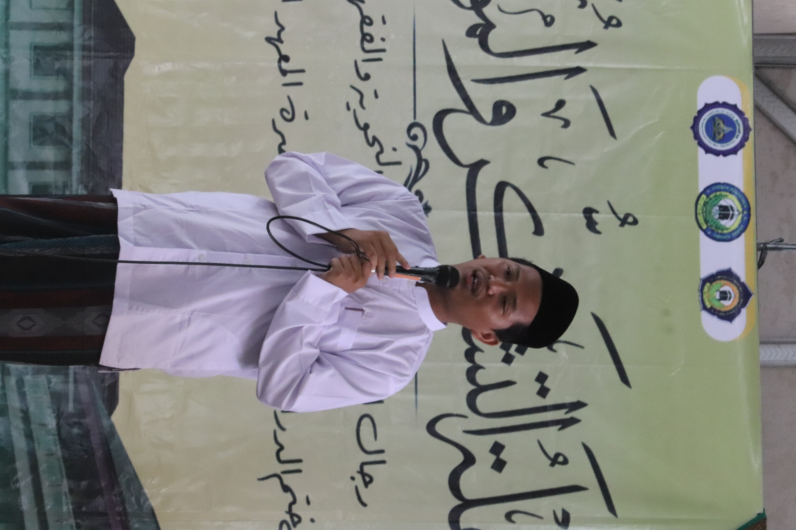

Penamaan Rushaifah pada angkatan kami di Muhadloroh Al Anwar ini bukanlah pilihan yang lahir tanpa makna. la adalah nama yang tumbuh dari sanad keilmuan, pengalaman talaqqi, dan jejak ruhani para guru dan masyayikh kami.
Secara historis, Rushaifah adalah sebuah kawasan di Makkah al-Mukarramah yang dikenal sebagai tempat berlangsungnya majelis ilmu para ulama besar, khususnya majelis dan pondok pesantrennya Sayyid Muhammad bin 'Alawi al-Maliki al-Hasani, seorang ulama Haramain yang menjadi rujukan dunia Islam dalam hadits, fiqh, dan tasawuf Ahlussunnah wal Jama'ah.
Para Masyayikh kami-putra-putra Syaikhona KH. Maimoen Zubair semuanya pernah menimba ilmu secara langsung di Makkah, wabil khusus majelis ilmu di Rushaifah yang sekarang dipimpin oleh Sayyid Ahmad bin Muhammad Alawi al-Maliki. Di sana, beliau-beliau tidak hanya belajar teks dan kitab, tetapi juga adab keilmuan, berkhidmah dan disidik untuk meniru keluhuran akhlak ulama.
Karenanya, bagi kami, Rushaifah bukan sekadar nama tempat, melainkan simbol dari sebuah tradisi:
Penamaan angkatan Rushaifah adalah ikhtiar untuk menyambungkan santri dengan mata rantai keilmuan para ulama, agar mereka menyadari sejak awal bahwa ilmu yang dipelajari bukan ilmu yang lahir di ruang kosong, melainkan ilmu yang diwariskan dari generasi ke generasi, dari pesantren hingga Haramain. Harapannya, nama Rushaifah tidak berhenti sebagai identitas angkatan, tetapi menjadi pengingat arah: bahwa santri angkatan Rushaifah kelak tumbuh sebagai pribadi yang berilmu, beradab, tidak ekstrem, tidak mudah menghakimi, dan senantiasa menjunjung warisan ulama dengan penuh hormat dan tanggung jawab.